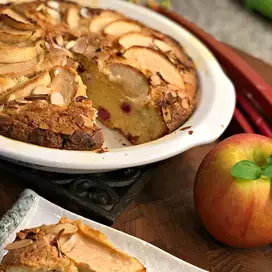

French-Style Apple Rhubarb Cake

Description
Made with a very thick vanilla batter, this rustic French dessert cake is
simplicity at its best! Chunks of rhubarb are mixed in, and apple slices
and sliced almonds are laid right on top. Rhubarb itself is a bit sour,
but it makes for the perfect combination with this light and tasty cake.
In French, this type of cake is called a 'Gateau Vite Fait' which
basically means it can be quickly made!
Ingredients
- 1¼ cups white sugar
- 1 stick butter
- 1 teaspoon vanilla extract
- 3 eggs
- 1⅔ cups all-purpose flour
- 2 teaspoons baking powder
- ⅛ teaspoon salt
- 1½ cups diced rhubarb
- 1 apple, thinly sliced
- ⅓ cup sliced almonds, or to taste
- 1 pinch white sugar, or to taste
Directions
-
Preheat the oven to 400 degrees F (200 degrees C). Grease a 9-inch round
pan.
-
Beat 1 1/4 cups sugar and butter together using an electric mixer until
well blended, light, and fluffy. Add eggs, one at a time, followed by
vanilla extract, mixing well after each addition.
-
Turn mixer to low speed and slowly add in flour, baking powder, and
salt, mixing just until combined. Fold in rhubarb.
-
Pour batter into the prepared baking pan. Smooth the top and place apple
slices in a circular pattern on batter. Sprinkle almonds and additional
sugar on top.
-
Bake in the preheated oven until a toothpick inserted into the center
comes out clean, 35 to 45 minutes. Let cool, and serve warm or cold.
Back to the main page